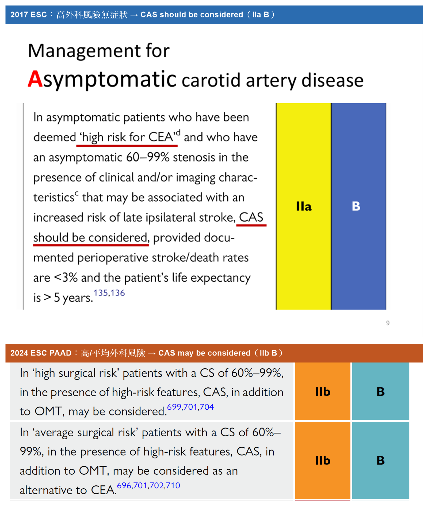
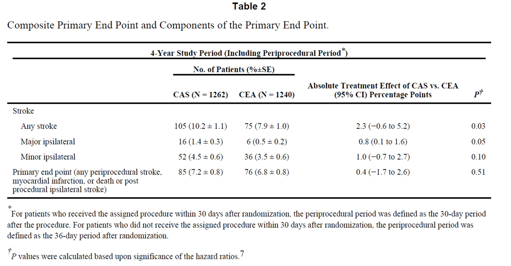
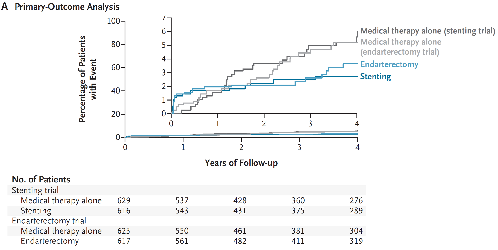
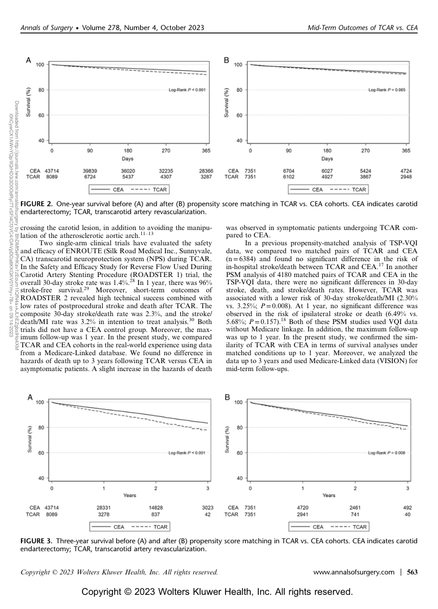

📚 講師
柯呈諭醫師 (2022, 2024)
🎯 學習目標
- 掌握無症狀與有症狀頸動脈狹窄的治療策略選擇（BMT / CAS / CEA）
- 熟悉 ESC 指引中 CAS 適應症之 Class 與 Level 分級，並了解 2017→2024（PAAD guideline）對無症狀患者 CAS 建議的演變（IIa B → IIb B）
- 了解高外科風險（high-risk for CEA）病人如何選擇 CAS
- 掌握有症狀病人血運重建的時間窗口與決策流程
- 解讀 CREST（2010）、ACST-2（2021）、CREST-2（2026）等關鍵隨機試驗與近期 propensity-score 研究中 CAS vs CEA 的結果，並能區辨各試驗的族群與終點
- 了解 TCAR（Transcarotid Artery Revascularization）的 flow reversal 機制與 ESVS 2023 Class IIa 建議
1. 頸動脈狹窄三大治療策略概覽：BMT / CAS / CEA

頸動脈狹窄的處置可分為三大方向：最佳藥物治療（Best Medical Therapy, BMT）、頸動脈支架置放（Carotid Artery Stenting, CAS）及頸動脈內膜切除術（Carotid Endarterectomy, CEA）。CAS 包含傳統經股動脈途徑（TFCAS）及近年興起的 Transcarotid Artery Revascularization（TCAR / TSCI），後者透過頸部直接切開進入頸總動脈，搭配逆向 flow reversal 腦保護迴路。選擇哪種策略需綜合評估症狀、狹窄程度、解剖特徵（包括主動脈弓型態）與外科風險。本章涵蓋 CAS vs CEA 適應症與決策依據（Card 2–6）、關鍵隨機與真實世界證據（CREST、ACST-2、CREST-2、propensity-score；Card 7–10），以及 TCAR 的機制與最新循證（Card 11）。
💡 Tip: BMT 是所有策略的基礎；CAS 或 CEA 係在 BMT 之上「加選」的血運重建方式，而非取代藥物治療。
📌 來源：柯呈諭醫師 2022 / 臺灣介入性心臟血管醫學會 CAS 訓練課程 / slide #2 (2022)
2. 無症狀頸動脈狹窄：平均外科風險下的治療建議

對於「平均外科風險（average surgical risk）」的無症狀 60–99% 狹窄患者，若具備臨床或影像學上提示較高晚期同側腦中風風險的特徵，且術者術後死亡/腦中風率 <3%、預期壽命 >5 年，CEA 可考慮列入治療計畫（Class IIa, Level B）。同一族群中，若 CAS 作為 CEA 的替代方案，亦可在同樣條件下考慮（Class IIb, Level B，見 slide #8）。
💡 Tip: 「無症狀」的定義是 6 個月內無同側腦中風或 TIA；此類病人選擇血運重建時，須嚴格確認術者的併發症率門檻 <3%。
📌 來源：柯呈諭醫師 2022 / 臺灣介入性心臟血管醫學會 CAS 訓練課程 / slide #7 (2022)
3. 無症狀狹窄高外科風險病人：CAS 建議等級的 2017 → 2024 演變（IIa B → IIb B）

在 2017 ESC 指引中，被評估為「CEA 高風險（high risk for CEA）」、且具備增加晚期同側腦中風風險影像/臨床特徵的無症狀 60–99% 狹窄患者，CAS「should be considered」（Class IIa, Level B），前提是術者術後死亡/腦中風率 <3%、預期壽命 >5 年。
但在 2024 ESC PAAD（Peripheral Arterial & Aortic Diseases）指引中，此建議已下修為 Class IIb, Level B（CAS「may be considered」），且高外科風險與平均外科風險兩個族群同樣為 IIb B，不再因「高外科風險」而給予較高等級。換言之，原本「IIa（should）vs IIb（may）」隨外科風險分層的差異，在 2024 版被拉平。
※ 講師 2024 年授課時，2024 ESC PAAD 指引尚未發布，故當時投影片仍呈現 2017 版（IIa B）；本卡片已更新為現行 2024 版本。
但在 2024 ESC PAAD（Peripheral Arterial & Aortic Diseases）指引中，此建議已下修為 Class IIb, Level B（CAS「may be considered」），且高外科風險與平均外科風險兩個族群同樣為 IIb B，不再因「高外科風險」而給予較高等級。換言之，原本「IIa（should）vs IIb（may）」隨外科風險分層的差異，在 2024 版被拉平。
※ 講師 2024 年授課時，2024 ESC PAAD 指引尚未發布，故當時投影片仍呈現 2017 版（IIa B）；本卡片已更新為現行 2024 版本。
💡 Tip: High-risk for CEA 常見原因包括：嚴重心肺合併症、對側頸動脈閉塞、放射線相關狹窄（post-radiation）、頸部手術史、高位病灶等。但須注意——2024 ESC 中即使屬高外科風險，無症狀患者 CAS 仍僅為 IIb B（may be considered）。
📌 來源：柯呈諭醫師 2022 & 2024 / 臺灣介入性心臟血管醫學會 CAS 訓練課程；2017 ESC：slide #9（2022）／2024 ESC PAAD Guidelines（Eur Heart J 2024）對照圖（柯醫師 2026 修訂提供）
4. 有症狀頸動脈狹窄：CEA 與 CAS 的建議等級對比

有症狀（6 個月內有同側 TIA 或腦中風）的患者中，CEA 在 70–99% 狹窄是 Class I、Level A 的強力建議；50–69% 狹窄則為 Class IIa、Level A，均要求術者術後死亡/腦中風率 <6%。CAS 在有症狀族群中，高外科風險者為 Class IIa B，平均風險者為 IIb B（見 slide #12），整體推薦等級略低於 CEA。
💡 Tip: 有症狀病人的 CEA 門檻是死亡/腦中風率 <6%（高於無症狀的 <3%），反映有症狀患者自然病史風險更高、血運重建效益更大。
📌 來源：柯呈諭醫師 2022 / 臺灣介入性心臟血管醫學會 CAS 訓練課程 / slide #11 (2022)
5. 有症狀病人血運重建時間窗與決策流程（ESC 指引演進）

對於有症狀 50–99% 狹窄，指引強調應盡速完成血運重建，理想上在症狀發生後 14 天內施行（Class I, Level A）；狹窄 <50% 的患者則不建議血運重建（Class III, Level A）。ESC 2017 決策流程圖清楚呈現：依症狀有無、狹窄度、外科風險，分流至 BMT、CEA + BMT 或 CAS + BMT 的選擇路徑，是臨床實務的核心架構。
💡 Tip: 14 天時間窗的概念來自 TIA 後早期腦中風復發率極高（24 h 內約 10%），早期介入可大幅降低再發風險。
📌 來源：柯呈諭醫師 2022 / 臺灣介入性心臟血管醫學會 CAS 訓練課程 / slide #13 + #14 (2022)
6. ESC 2024 更新決策流程：MDT 審查與更精細的分層

ESC 2024 指引更新了平均風險患者的決策流程（Figure 2），新增「Near occlusion + distal vessel collapse」的獨立分支並建議 BMT，且對有症狀伴「near occlusion」且在 BMT 下仍有復發症狀的患者，CEA/CAS 須在多學科團隊（MDT）會議後才可考慮（Class IIb B）。相比 2017 版，2024 版流程更強調 MDT 審查與個別化評估。
💡 Tip: Near occlusion（接近完全閉塞）患者的遠端血管可能塌陷，此時腦中風風險反而較低，過度積極血運重建風險效益比需仔細評估。
📌 來源：本圖為 2024 ESC PAAD Guidelines, Figure 2（「average risk」患者決策流程；須與 2023 ESVS 版本區分）／柯呈諭醫師 2022 & 2024 臺灣介入性心臟血管醫學會 CAS 訓練課程（柯醫師 2026 修訂確認）
7. CREST 試驗（NEJM 2010）：CAS vs CEA 長期結果比較

CREST（Brott et al., NEJM 2010）為納入症狀性與無症狀性患者的隨機試驗（CAS n=1,262 vs CEA n=1,240）。主要複合終點為「圍術期 stroke／MI／death ＋ 4 年內同側 stroke」：CAS 7.2% vs CEA 6.8%，絕對差 0.4%（−1.7 至 2.6），p=0.51（無顯著差異）。4 年內任何 stroke 在 CAS 較高（10.2% vs 7.9%，p=0.03），主要 ipsilateral stroke 1.4% vs 0.5%（p=0.05）。圍術期 CAS 較多 stroke、CEA 較多 MI。年齡有交互作用：約 70 歲為界，較年輕者 CAS 較佳、較年長者 CEA 較佳。整體而言，由經驗豐富術者執行時 CAS 與 CEA 結果相當，奠定 CAS 作為 CEA 合理替代選項的基礎。
💡 Tip: 注意族群與樣本數——CREST 是 n=1,262/1,240 的症狀＋無症狀混合試驗；常被誤植的「n=1,811/1,814、p=0.86」其實出自下一張卡片的 ACST-2（純無症狀）試驗。
📌 來源：Brott TG et al., CREST, N Engl J Med 2010;363(1):11–23（PMID 20505173；DOI 10.1056/NEJMoa0912321）／柯呈諭醫師 2024 課程；圖為 CREST 主要終點 Table（柯醫師 2026 修訂提供）
8. ACST-2 試驗（Lancet 2021）：無症狀患者 CAS vs CEA

ACST-2（Halliday et al., Lancet 2021）是目前最大型、針對無症狀頸動脈狹窄比較 CAS vs CEA 的隨機試驗，隨機分派 3,625 名患者（CAS n=1,811 vs CEA n=1,814）。術後死亡或任何致命／致殘腦中風兩組相當（61 vs 64 events，p=0.86），嚴重術後併發症約各 1%。追蹤期間之非術後致命／致殘腦中風率亦相似（RR=0.98（0.64–1.48），p=0.91）。輕微（非致殘性）腦中風在 CAS 略多。結論：在無症狀患者、由熟練術者執行下，CAS 與 CEA 的嚴重併發症與長期腦中風風險相當，兩者皆為合理選擇。
💡 Tip: ACST-2 與 CREST 易混淆——ACST-2 是「純無症狀」族群、樣本數 1,811/1,814；CREST（Card 7）是「症狀＋無症狀」混合、樣本數 1,262/1,240。判讀數據時務必先確認試驗來源與族群。
📌 來源：Halliday A et al., ACST-2, Lancet 2021;398(10305):1065–1073（PMID 34469763；DOI 10.1016/S0140-6736(21)01910-3）／柯呈諭醫師 2024 課程（柯醫師 2026 修訂釐清試驗歸屬）
9. CREST-2 試驗（NEJM 2026）：強化藥物治療時代的血運重建價值

CREST-2 由兩個平行、評估者盲性（observer-blinded）隨機試驗組成，於 5 國 155 個中心納入無症狀高度（≥70%）狹窄患者，在現代強化藥物治療（intensive medical management；嚴格控制收縮壓與 LDL）背景下評估「加做血運重建」的額外效益。主要複合終點＝隨機分派後 44 天內任何 stroke 或 death，加上其後追蹤至 4 年的同側缺血性 stroke。
‧ Stenting trial（n=1,245）：4 年事件率 單純藥物 6.0%（95% CI 3.8–8.3）vs stenting＋藥物 2.8%（1.5–4.3），P=0.02（絕對差顯著）；0–44 天藥物組 0 件、stenting 組 7 件 stroke＋1 件 death。
‧ Endarterectomy trial（n=1,240）：4 年事件率 單純藥物 5.3%（3.3–7.4）vs CEA＋藥物 3.7%（2.1–5.5），P=0.24（未達顯著）；0–44 天藥物組 3 件、CEA 組 9 件 stroke。
結論：相較單純強化藥物治療，加做 stenting 顯著降低主要複合終點；而 CEA 未帶來統計顯著的額外效益。提示在當代強化藥物治療下，無症狀患者血運重建（尤其 CEA）的邊際效益縮小，決策應更個別化。
‧ Stenting trial（n=1,245）：4 年事件率 單純藥物 6.0%（95% CI 3.8–8.3）vs stenting＋藥物 2.8%（1.5–4.3），P=0.02（絕對差顯著）；0–44 天藥物組 0 件、stenting 組 7 件 stroke＋1 件 death。
‧ Endarterectomy trial（n=1,240）：4 年事件率 單純藥物 5.3%（3.3–7.4）vs CEA＋藥物 3.7%（2.1–5.5），P=0.24（未達顯著）；0–44 天藥物組 3 件、CEA 組 9 件 stroke。
結論：相較單純強化藥物治療，加做 stenting 顯著降低主要複合終點；而 CEA 未帶來統計顯著的額外效益。提示在當代強化藥物治療下，無症狀患者血運重建（尤其 CEA）的邊際效益縮小，決策應更個別化。
💡 Tip: 強化藥物治療（高強度 statin、嚴格血壓/血糖控制、抗血小板、戒菸）已大幅壓低無症狀頸動脈狹窄的年中風率，使「是否需要血運重建」成為需權衡的問題，而非預設必做。注意 CREST-2 限定解剖條件良好、術者經嚴格 credentialing 的族群，外推時需考量。
📌 來源：Brott TG, Howard G, Lal BK, … Meschia JF；CREST-2 Investigators. Medical Management and Revascularization for Asymptomatic Carotid Stenosis. N Engl J Med 2026 Jan 15;394(3):219–231（線上 2025 Nov 21）（PMID 41269206；DOI 10.1056/NEJMoa2508800；ClinicalTrials.gov NCT02089217）／柯呈諭醫師 2026 補充提供
10. 近期 Propensity-Score 研究：30 天 CEA vs CAS 結果

EuroIntervention 2024 年發表的 propensity-score 配對分析（總 n=538；CEA 232 vs CAS 224）顯示，30 天腦中風（minor + major）、TIA、死亡率在兩組均無統計顯著差異；住院天數 CAS 組略短（3.2 vs 3.9 天，p=0.005）。此真實世界數據進一步支持：在合適病人中，CAS 與 CEA 的安全性相當，且 CAS 具有住院天數的優勢。
💡 Tip: Propensity-score matching 可校正兩組基線差異，使觀察性研究的結果更接近隨機對照試驗的推論效力，但仍無法完全排除未測量的干擾變項。
📌 來源：柯呈諭醫師 2024 / 臺灣介入性心臟血管醫學會 CAS 訓練課程 / slide #16 + #17 (2024)
11. TCAR — Transcarotid Artery Revascularization：機制、證據與 ESVS 建議

TCAR（Transcarotid Artery Revascularization）透過頸部小切口直接進入頸總動脈（CCA），搭配 ENROUTE Neuroprotection System 建立腦部逆向血流保護迴路（CCA→股靜脈），在整個支架置放過程中持續 flow reversal，顯著減少新發 DWI 腦部病灶（13% vs 33%，TFCAS；p＝0.03）。ROADSTER-2（Kashyap 2022, PMID 35381327）納入 692 名 standard-risk 患者，30 天 stroke/death 為 2.3%，技術成功率 99.7%。ESVS 2023 Recommendation 82（Class IIa, Level B）明確建議：當 transfemoral 途徑具有較高風險時，應考慮 TCAR（或橈動脈途徑）作為替代選擇。Zarrintan VQI propensity-matched 研究（Ann Surg 2023；TCAR n=5,437 vs CEA n=5,437）顯示：3 年整體存活率與無腦中風存活率兩組無統計顯著差異，證實 TCAR 在真實世界中與 CEA 結果相當。
💡 Tip: TCAR 最大優勢是「繞過主動脈弓」— Type III arch、嚴重主動脈鈣化或迂曲的 ICA 解剖，使 TFCAS 風險升高時，TCAR 直接從 CCA 入路可大幅降低弓部操作相關栓塞。
📌 來源：Naylor AR et al.; ESVS 2023 Guidelines, Eur J Vasc Endovasc Surg. DOI 10.1016/j.ejvs.2022.04.011 (Recommendation 82, Class IIa B) ＋ Zarrintan S et al., VQI Propensity-matched Analysis, Ann Surg 2023 ＋ Kashyap VS et al., ROADSTER-2, PMID 35381327
🧠 Quick Check
Q1. 根據 ESC 指引，對於「平均外科風險」的無症狀 60–99% 頸動脈狹窄患者，CAS 作為 CEA 替代選項的建議等級為何？
對於平均手術風險的無症狀病人，CAS 作為 CEA 的替代方案為 Class IIb、Level B（「may be considered」），條件是術者死亡/腦中風率 <3%、預期壽命 >5 年。若病人被評估為「高外科風險（high risk for CEA）」，則 CAS 的等級升至 Class IIa B。兩者的差別在於「should be considered（IIa）」與「may be considered（IIb）」。
Q2. 有症狀頸動脈狹窄患者，指引建議血運重建（revascularization）應在症狀發生後多少天內完成（Class I，Level A）？
ESC 指引（Class I，Level A）建議對有症狀 50–99% 頸動脈狹窄患者，應盡快完成血運重建，理想上在症狀發生後 14 天內施行。TIA 後早期復發腦中風風險極高，早期介入可顯著降低再發風險，14 天是目前循證醫學支持的時間窗口。
Q3. CREST 試驗（NEJM 2010）的主要複合終點（圍術期 stroke／MI／death ＋ 4 年內同側 stroke），CAS 與 CEA 的比較結果為何？
CREST（n=1,262 CAS vs 1,240 CEA）主要複合終點為 CAS 7.2% vs CEA 6.8%，p=0.51，無統計顯著差異。圍術期 CAS 較多 stroke、CEA 較多 MI；年齡有交互作用（約 70 歲為界，較年輕者 CAS 較佳、較年長者 CEA 較佳）。⚠️ 注意：常被誤植的「n=1,811/1,814、61 vs 64、p=0.86」其實出自純無症狀族群的 ACST-2 試驗（Card 8），並非 CREST。
Q4. CREST-2 試驗（NEJM 2026）在「接受現代強化藥物治療」的無症狀高度頸動脈狹窄患者中，得到什麼結論？
CREST-2 的兩個平行試驗顯示：相較單純強化藥物治療，加做 stenting 顯著降低「44 天內 stroke／death 或 4 年同側 stroke」的複合終點（stenting 2.8% vs 藥物 6.0%，P=0.02）；而 CEA 並未帶來統計顯著的額外效益（CEA 3.7% vs 藥物 5.3%，P=0.24）。此結果反映強化藥物治療已壓低無症狀患者的事件率，血運重建（尤其 CEA）的邊際效益縮小，決策應更個別化。